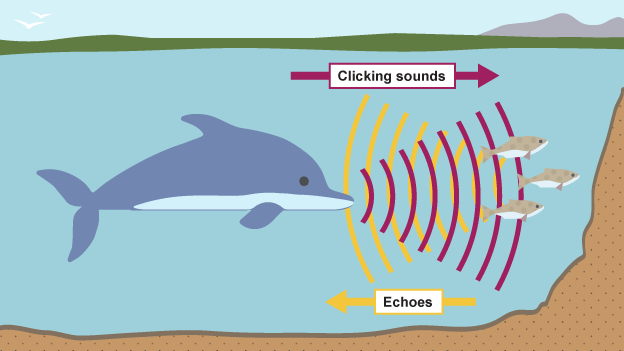
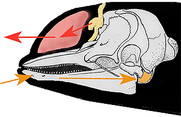

Fig.1, Demonstration of How Echolocation Works

Fig.2, Anatomy of Sonar in Dolphin Skulls
It is believed that many if not all, toothed whales have the ability of echolocation, for navigation and finding food. The main tools of echolocation include a good sense of hearing, a means of producing sound and a way of directing that sound to the surrounding environment.
The exact manner and production of echolocation is still poorly understood but, it is believed that air, passing out of the lungs and through a series of convoluted air sacs along the nasal passage produce vibrations, or audible clicks. These clicks may be directed out forward of the whale by a flexible, oil-filled organ called the melon (creating the distinctive forehead profile of many toothed whales). These sound waves travel out into the environment bouncing off of anything that is denser than the surrounding water. These returning sound waves may travel along the nerve and oil-filled channel of the hollow, lower jaw to the inner ear. These signals can be processed as a changing image of the environment: moving schools of fish, other whales, predators, etc. Despite the common darkness of marine environments, toothed whales have a means of seeing.
Just how this ability differs between species is still unknown but may represent the overall diversity of the suborder. Stellwagen Bank gives us a glimpse of this variation. Sightings of different species vary from year to year and day to day and may demonstrate cyclical changes on the Bank or the wanderings of toothed whales searching for food. Some of these whales are regular visitors while others are seen only rarely.
Audio of Dolphin Chirping
Please Enjoy a Video Explaining How Echolocation Works With Dolphins